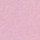

Examples of Use
Companies and Businesses
The following list shows some of the Companies and Businesses that support the use of the IEEE Test Standards. This is not an exhaustive list
UKMOD
Use of IEEE Test Standards is Mandated for new Test Programs by Defstan 66-031. Attendance at IEEE SCC20 Group, helping to develop and promote standards
 DECA
DECA
Development of standards bases Test Programs, using multi purpose ATEs, using test standards to test multiple MOD platforms.Experience of rehosting and migration from one Test platform to another, using standards
 SPHEREA
SPHEREA
NewWaveX tools suite. Attendance at IEEE SCC20 Group, helping to develop and promote the use of the standards. Expert advice and consultancy on the OSA-RTS and the use of the standards. Development of the OSA-RTS
 NationaI Instruments
NationaI Instruments
TestStand and ATML Importer. Attendance at IEEE SCC20 Group, helping to develop and promote the use of the standards
 Reston Software
Reston Software
ATML Pad. Attendance at IEEE SCC20 Group, helping to develop and promote the use of the standards
Indra
Development of Test Bricks 1641 test executive. Generating 1641 Test Programs for A400M
Popular Posts
-

Smart diagnostic
26 Aug 2011 -

RF Test
26 Aug 2011 -

Demonstration
26 Aug 2011